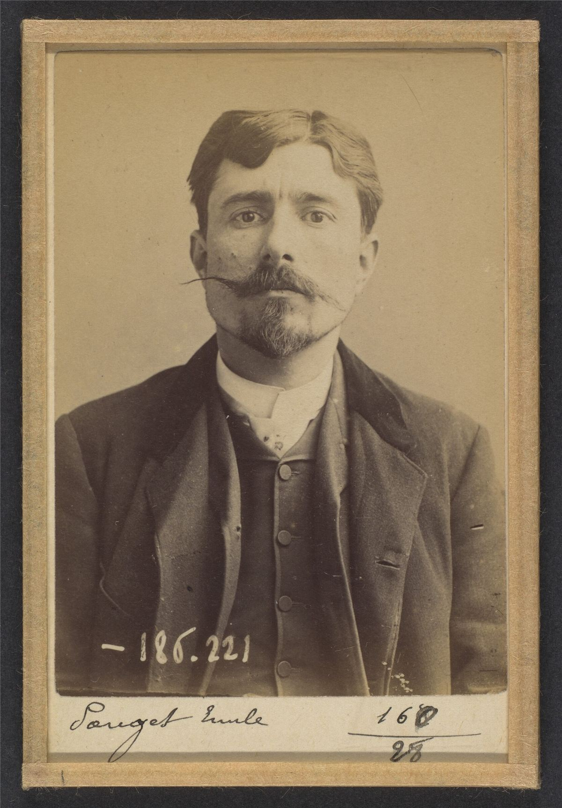

Dossier à relire par la bande.
Introduction
L'anarcho-syndicalisme est un courant du mouvement ouvrier qui associe la lutte contre le capitalisme à la lutte contre l'État et les rapports de domination. Il considère que les travailleurs et les travailleuses peuvent construire leur émancipation par leur propre organisation, leur action collective et la prise en main directe de la production.
Son ambition ne se limite pas à améliorer les conditions de travail dans le cadre du capitalisme. Il cherche également à développer, dès les luttes quotidiennes, les capacités d'organisation nécessaires à une transformation révolutionnaire de la société.
L'anarcho-syndicalisme défend notamment l'action directe, l'autonomie syndicale, le fédéralisme, la solidarité de classe et la grève générale. Il refuse que l'émancipation des travailleurs soit confiée à un parti politique, à une élite dirigeante ou à un État prétendant agir en leur nom.
Le syndicat n'est donc pas seulement conçu comme un instrument de négociation salariale : il peut devenir un moyen d'organisation collective et, dans certaines conceptions anarcho-syndicalistes, une structure fondamentale de la société future.
Ce courant a connu un développement particulièrement important au début du XXe siècle. Il a marqué l'histoire ouvrière de nombreux pays, notamment l'Espagne, l'Argentine, l'Italie, le Portugal, la France et l'Allemagne.
1. Les racines dans le mouvement ouvrier international
L'anarcho-syndicalisme ne naît pas soudainement avec la création d'une organisation particulière. Il se développe progressivement à partir des débats qui traversent le mouvement ouvrier international au XIXe siècle.
L'Association internationale des travailleurs (AIT), fondée en 1864, rassemble des courants socialistes, ouvriers et révolutionnaires aux conceptions différentes. Les conflits entre les partisans de Marx et ceux de Bakounine portent notamment sur la question de l'État, l'organisation politique et les moyens de parvenir à l'émancipation sociale.
La tendance antiautoritaire défend l'autonomie des travailleurs, le fédéralisme et l'organisation de la société par les associations ouvrières et les communes libres.
Après la rupture de l'AIT, les traditions anarchistes continuent de développer leurs liens avec les organisations ouvrières. Des militants libertaires participent à la création de syndicats, de fédérations professionnelles, de journaux et de mouvements de grève.
L'idée centrale est que les travailleurs ne doivent pas attendre qu'une organisation politique prenne le pouvoir pour commencer à transformer leurs conditions d'existence. Ils doivent pouvoir s'organiser eux-mêmes, dans leurs lieux de travail et leurs communautés.
2. La naissance du syndicalisme révolutionnaire

À la fin du XIXe siècle, le syndicalisme révolutionnaire se développe notamment en France. Il apparaît dans un contexte de conflits sociaux, de croissance industrielle et de contestation des formes traditionnelles de représentation politique.
La Confédération générale du travail (CGT), fondée en 1895, devient un important foyer de développement de cette orientation.
Les militants révolutionnaires défendent l'autonomie du mouvement syndical par rapport aux partis politiques. Ils considèrent que les travailleurs doivent mener leurs luttes par leurs propres organisations et leurs propres moyens.
La grève, le boycott, le sabotage au sens historique de certaines formes de résistance ouvrière, le refus de collaboration et l'action collective constituent différents moyens de lutte.
Le syndicalisme révolutionnaire ne se confond cependant pas entièrement avec l'anarchisme. Il rassemble des militants de sensibilités diverses, dont certains sont anarchistes et d'autres ne se revendiquent pas de cette tradition.
3. La Charte d'Amiens de 1906
Le congrès de la CGT réuni à Amiens en octobre 1906 adopte un texte devenu célèbre sous le nom de Charte d'Amiens.
Ce texte affirme l'indépendance du syndicalisme à l'égard des partis politiques et reconnaît au syndicat une double fonction : défendre les intérêts immédiats des travailleurs et préparer leur émancipation intégrale.
La Charte d'Amiens devient une référence importante du syndicalisme révolutionnaire français.
Elle ne constitue toutefois pas un manifeste exclusivement anarchiste. Elle exprime un compromis entre différentes sensibilités présentes dans la CGT et ne définit pas à elle seule l'ensemble des principes de l'anarcho-syndicalisme.
Cette distinction est essentielle : le syndicalisme révolutionnaire et l'anarcho-syndicalisme partagent de nombreuses pratiques et références, mais leurs conceptions politiques ne sont pas toujours identiques.
4. L'essor international au début du XXe siècle
Les idées du syndicalisme révolutionnaire et de l'anarcho-syndicalisme se diffusent dans de nombreux pays.
Espagne : la CNT
La Confederación Nacional del Trabajo (CNT) est fondée à Barcelone en 1910. Elle devient progressivement l'une des principales organisations ouvrières espagnoles.
Son implantation est particulièrement importante en Catalogne, en Andalousie, dans le Levant et dans plusieurs centres industriels.
La CNT défend l'action directe, le fédéralisme syndical et l'émancipation des travailleurs par leur propre organisation.
Elle rassemble des courants et des sensibilités différentes. Ses débats internes portent notamment sur les rapports entre action syndicale, anarchisme organisé, révolution et stratégie face à l'État.
Argentine : la FORA
La Federación Obrera Regional Argentina (FORA) constitue une expérience majeure du mouvement ouvrier libertaire latino-américain.
Fondée en 1901, elle se développe dans un pays marqué par une forte immigration, une industrialisation inégale et des conflits sociaux importants.
L'influence anarchiste y est considérable. La FORA connaît cependant des divisions internes, notamment autour de son orientation idéologique.
La FORA du Ve Congrès adopte explicitement le communisme anarchiste comme finalité. Cette orientation la distingue d'autres organisations syndicales qui privilégient une conception plus large du syndicalisme révolutionnaire.
Italie : l'USI
L'Unione Sindacale Italiana (USI), fondée en 1912, devient une organisation importante du syndicalisme révolutionnaire italien.
Elle participe aux luttes ouvrières et aux mouvements sociaux de la période, notamment dans le contexte de l'agitation antimilitariste et des conflits industriels.
Elle est ensuite confrontée à la montée du fascisme, qui détruit progressivement les organisations ouvrières indépendantes.
Portugal : la CGT
La Confederação Geral do Trabalho portugaise, fondée en 1919, rassemble des syndicats révolutionnaires et libertaires.
Elle joue un rôle important dans les mobilisations ouvrières portugaises avant la consolidation de la dictature militaire et de l'Estado Novo.
Allemagne : la FAUD
La Freie Arbeiter-Union Deutschlands (FAUD) se développe après la Première Guerre mondiale dans la tradition du syndicalisme révolutionnaire antiautoritaire.
Elle défend le fédéralisme, l'autonomie ouvrière et la transformation révolutionnaire de la société.
Elle est progressivement écrasée par la répression nazie après 1933.
5. La création de l'Association internationale des travailleurs en 1922
La Première Guerre mondiale et la révolution russe de 1917 provoquent de profonds débats dans le mouvement ouvrier international.
Une partie des syndicalistes révolutionnaires se rapproche du bolchevisme. D'autres refusent la subordination des syndicats à un parti ou à un État révolutionnaire.
Cette seconde orientation contribue à la fondation, à Berlin en 1922, de l'Association internationale des travailleurs, généralement désignée par le sigle AIT ou IWA.
Cette internationale rassemble des organisations syndicales révolutionnaires et anarcho-syndicalistes de plusieurs pays.
Elle défend l'indépendance des organisations ouvrières, le fédéralisme et l'objectif d'une réorganisation libertaire de la société.
L'AIT de Berlin devient une référence historique majeure de l'anarcho-syndicalisme international.
6. La révolution espagnole de 1936

En juillet 1936, une partie de l'armée espagnole se soulève contre la République. Le soulèvement échoue dans plusieurs régions, notamment à Barcelone, où les organisations ouvrières jouent un rôle déterminant dans la résistance.
La CNT et la FAI participent à l'insurrection contre le coup d'État militaire.
Dans les territoires où le soulèvement est repoussé, les travailleurs prennent le contrôle de nombreuses entreprises, tandis que des collectivités agricoles se mettent en place dans plusieurs régions.
Les syndicats jouent un rôle central dans l'organisation de la production, des transports, des services et de la vie économique.
La révolution espagnole représente l'une des expériences les plus importantes de l'histoire anarcho-syndicaliste.
Elle révèle les possibilités de l'organisation ouvrière autonome, mais également les difficultés d'une transformation sociale menée dans un contexte de guerre, de pénuries et de conflits politiques.
Les débats sur la participation de militants anarchistes aux institutions républicaines, les relations entre CNT, FAI, UGT et POUM, ainsi que les affrontements de mai 1937 à Barcelone constituent des questions essentielles pour comprendre cette période.
7. Répression, clandestinité et recomposition
La victoire franquiste en 1939 entraîne l'interdiction des organisations anarchistes et syndicales indépendantes en Espagne.
Des milliers de militants sont emprisonnés, exécutés, contraints à l'exil ou à la clandestinité.
En Italie, en Allemagne et au Portugal, les régimes fascistes ont également détruit les organisations syndicales révolutionnaires.
La Seconde Guerre mondiale et la consolidation des régimes autoritaires affaiblissent considérablement le mouvement anarcho-syndicaliste international.
Après la guerre, les organisations survivantes poursuivent leur activité, notamment dans l'exil et la clandestinité. L'AIT continue d'exister, mais son influence est désormais beaucoup plus limitée que celle des grandes organisations de l'entre-deux-guerres.
À partir des années 1970, de nouvelles recompositions apparaissent, notamment avec la reconstruction de la CNT espagnole après la mort de Franco.
L'anarcho-syndicalisme demeure aujourd'hui une tradition présente dans plusieurs pays, même si ses organisations n'ont généralement plus l'implantation de masse qu'elles avaient connue au début du XXe siècle.
Dans ce dossier
- Idées et théories
- Expériences et héritages, avec la conclusion et la bibliographie complète du dossier.
- Pour apprendre pas à pas : le parcours Anarchosyndicalisme de l'université populaire.
- Les portraits d'Émile Pouget et de Rudolf Rocker.
Sources et pour aller plus loin
Bibliographie du dossier
- Bibliographie et ressourcesTextes, travaux historiques et archives, en bas de la page Expériences et héritages.
Sur le site
- L'entrée dans les syndicatsLe dossier Anarchisme, de la CGT au congrès d'Amsterdam.
- L'action directeLe dossier d'Histoire des luttes.
- Espagne 1936La révolution de la CNT-FAI.
Dossier rédigé par la bande à Mamie à partir des textes originaux et des travaux d'historiennes et d'historiens cités en sources. Libre de reproduction.